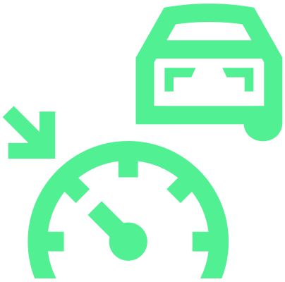
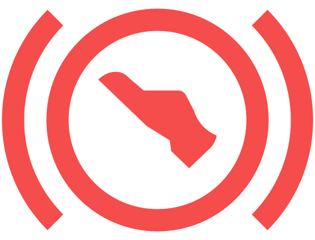

Régulation ACC
L’ACC maintient la vitesse définie. Si votre véhicule s’approche du véhicule qui précède, l’ACC commence automatiquement à respecter la distance définie par rapport à ce véhicule.
Le maintien de la vitesse réglée et de la distance sera ci-après désigné par Réglage.

MISE EN GARDE
L’ACC ne réagit pas face à des objets traversant ou arrivant dans le sens inverse.

Le système ACC est avant tout prévu pour une utilisation sur autoroute.
pACC (Régulateur de vitesse prédictif)
L’pACC est une extension du système ACC.
L’pACC adapte la vitesse en fonction des informations fournies par les sources suivantes :
Données de navigation
Reconnaissance des panneaux de signalisation
Capteurs, radars et caméras
Le pACC en utilisant les données partagées en ligne
Afin de mieux évaluer la situation, le système utilise des données partagées avec d’autres véhicules (selon l’équipement du véhicule, cette fonction peut ne pas être disponible dans le véhicule et sur le marché concerné).
En cas d’utilisation de données partagées en ligne, le système adapte la vitesse du véhicule à la vitesse moyenne locale des autres véhicules. La régulation n’a lieu que si la vitesse partagée est inférieure à la vitesse actuellement réglée.
Les conditions suivantes doivent être remplies pour l'utilisation des données partagées :
Le système Travel Assist ou ACC est activé.
Le véhicule est connecté à Internet.
Les données de position pour les services Škoda Connect (partage des données de localisation, du véhicule et de l’utilisateur) Réglage de la protection des données personnelles sont activées.
Une licence de données en ligne active est disponible dans le véhicule pour Travel Assist.
Réaction aux feux de circulation
En cas de détection d’un feu rouge, le véhicule s’arrête automatiquement (en fonction de l’équipement du véhicule, cette fonction peut ne pas être disponible dans le véhicule et sur le marché concerné).
À l’arrêt du véhicule, le démarrage doit être effectué manuellement si aucun véhicule ne se trouve devant.
La réaction aux feux de circulation n’est pas disponible dans les cas suivants :
Le véhicule roule sur une autoroute.
Travel Assist n’est pas disponible.
Fonction de changement de direction
Lorsque le conducteur indique qu’il a l’intention de changer de direction en actionnant le levier des clignotants et de l’inverseur-codes, le système peut décélérer le véhicule avant l’intersection probable la plus proche. Cette décélération a lieu indépendamment du fait qu’un guidage soit actif ou non.
Vitesse de croisière
Si le conducteur règle sur autoroute une vitesse inférieure à la vitesse maximale actuellement en vigueur, le système applique cette vitesse après un court instant comme vitesse de croisière. Le véhicule n’accélère pas automatiquement au-delà de cette vitesse réglée. La vitesse de croisière est disponible à partir d’environ 90 km/h.
Plage de vitesse
En fonction de l’équipement, l’ACC permet un réglage de vitesse entre 20 et 210 km/h.
Si la régulation commence à une vitesse inférieure à 20 km / h sur les véhicules à transmission automatique, la vitesse est automatiquement augmentée à 20 km / h ou réglée en fonction de la vitesse du véhicule qui précède.
Niveau de distance
La distance au véhicule devant vous est réglable sur cinq niveaux différents.
MISE EN GARDE
Conserver une distance minimale conformément aux réglementations légales spécifiques à chaque pays.
Toujours régler une distance plus grande lorsque les conditions météorologiques sont défavorables.
Arrêt et démarrage automatiques du véhicule
À l’aide de l’ACC, un véhicule peut décélérer jusqu’à l’arrêt et se remettre automatiquement en mouvement.
L'état de préparation du véhicule pour la manœuvre de démarrage automatique est indiqué par le message sur l'écran du combiné d'instruments.
La disponibilité pour la manœuvre de démarrage automatique est limitée dans le temps ; ce temps peut être prolongé en utilisant l'une des options suivantes :
Pousser le levier en position

Saisir le volant (s’applique aux véhicules avec détection des mains sur le volant)

Démarrage manuel du véhicule
Actionnement de la pédale d'accélérateur
Pousser le levier en position

MISE EN GARDE
Vérifier la chaussée avant chaque départ et être prêt à freiner.
Dépasser
Si votre véhicule passe sur la voie de dépassement et qu’aucun autre véhicule n’est détecté devant, l’ACC accélère jusqu’à la vitesse réglée.
Affichage de l’état sur l’écran du combiné d’instruments
s’allume - l’ACC est activé

s’allume – la régulation est active
Lorsque la régulation démarre, la vitesse réglée est affichée.

s’allume – l’ACC ne décélère pas suffisamment
Appuyer sur la pédale de frein.

s’allume – l’ACC règle la vitesse du véhicule en fonction de la vitesse autorisée

s’allume – l’ACC règle la vitesse du véhicule en fonction de la fin de la limitation de vitesse
s’allume – l’ACC règle la vitesse du véhicule à l’approche d’une priorité à droite
s’allume – l’ACC règle la vitesse du véhicule à l’approche d’un feu

s’allume – l’ ACC règle la vitesse du véhicule à l’approche d’un rond-point


s’allume – l’ACC règle la vitesse du véhicule à l’approche d’un carrefour

s’allume – l’ACC règle la vitesse du véhicule à l’approche d’un virage à gauche

s’allume – l’ACC règle la vitesse du véhicule à l’approche d’un virage à droite


s’allume – l’ACC règle la vitesse du véhicule à l’approche d’une sortie à gauche


s’allume – l’ACC règle la vitesse du véhicule à l’approche d’une sortie à droite

Si le symbole s’allume en blanc, cela signifie qu’un événement imminent a été détecté, mais que la régulation n’a pas lieu.